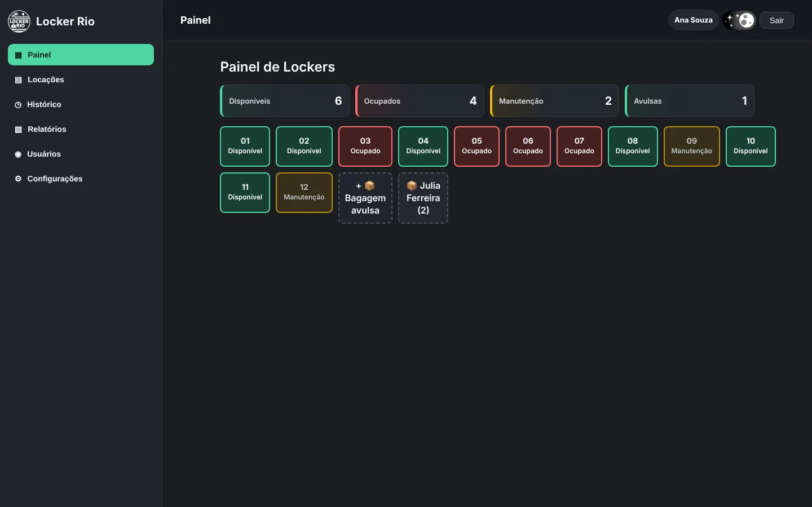

Állan Vieira
Tecnologia que entende o negócio.
Desenvolvo sistemas, automações e soluções digitais que conectam tecnologia, processos e pessoas para apoiar a eficiência operacional.
Diferencial
Por que meu trabalho é diferente?
Enquanto muitos desenvolvedores começam pela tecnologia, eu começo entendendo o negócio.
Minha experiência em operações, logística, faturamento e sistemas corporativos me permite criar soluções que fazem sentido para quem realmente vai utilizá-las.
Antes de escolher ferramentas, frameworks ou arquitetura, busco compreender o processo, os gargalos, os usuários e o resultado esperado.
Como posso ajudar
Soluções digitais para empresas, produtos e processos.
Desenvolvo soluções para negócios que precisam ganhar organização, performance e clareza.
Soluções em destaque
Problemas reais transformados em produtos digitais.

Sistema Web • Cliente real
Locker Rio
Sistema web para gestão de lockers e guarda de bagagens, desenvolvido para digitalizar uma operação física real.
Produto Digital • Em desenvolvimento
Atípicos
Aplicativo para apoiar pessoas com TEA, familiares e profissionais, reunindo rotina, comunicação, documentos e acompanhamento.
Landing Page • SEO local
Casa da Mãe Granola
Landing page institucional para negócio local, desenvolvida com foco em performance, SEO técnico, dados estruturados e conversão.
Minha forma de trabalhar
Clareza, evolução e foco no problema certo.
Entender antes de propor
Compreender contexto, usuários, fluxos e problema real.
Construir pensando em evolução
Estrutura organizada, manutenção viável e crescimento.
Simplificar processos
Reduzir complexidade e organizar informações.
Comunicar com clareza
Alinhamento, documentação e transparência.
Entregar valor continuamente
Soluções úteis, funcionais e alinhadas ao resultado esperado.
Processo
Do problema ao software.
Meu processo começa antes do código: entendo o contexto, mapeio fluxos e depois projeto a solução.
Entender
Contexto, usuários e objetivo.
Mapear
Fluxos, gargalos e sistemas envolvidos.
Projetar
Arquitetura, regras e experiência.
Desenvolver
Interface, backend, dados e integrações.
Validar
Testes, ajustes e melhoria de uso.
Evoluir
Manutenção, expansão e novas necessidades.
Decisões técnicas
Não escolho tecnologia pela popularidade. Escolho pela adequação ao problema.
Adequação ao problema
A tecnologia deve servir ao contexto, não o contrário.
Simplicidade sustentável
Nem todo projeto precisa de uma stack complexa.
Manutenção viável
Estrutura preparada para ajustes e evolução.
Performance e experiência
Soluções rápidas, claras e agradáveis para quem utiliza.
Tecnologias
Ferramentas como meio para resolver problemas.
Desenvolvimento
React, Next.js, JavaScript, TypeScript, HTML5, CSS3, Tailwind CSS, React Native.
Backend e Dados
Node.js, Express, APIs REST, SQL, PostgreSQL, Supabase, modelagem de dados e autenticação.
Automação e BI
Power BI, Power Query, Power Automate, Excel Avançado, indicadores e relatórios.
Sistemas Corporativos
SAP, WMS, ERP, Microsoft 365 Admin, faturamento, logística e processos operacionais.
Experiência
Experiência corporativa aplicada à tecnologia.
Conhecimento prático dos desafios reais enfrentados pelas empresas, conectando processos de negócio, tecnologia e melhoria contínua: faturamento, logística, documentos fiscais, indicadores, SAP, WMS e sistemas ERP.
Cariocarga Logística e Transporte LTDA
Atuação nos processos de faturamento, emissão e controle de documentos fiscais de transporte e serviços, contas a receber, validações financeiras e suporte à organização dos processos administrativos.
Deep Logística Dedicada e Portuária LTDA
Experiência em operações logísticas utilizando WMS, controle de estoque, inventários, romaneios, relatórios operacionais, documentos fiscais e integração de informações entre áreas.
M.O. Guimarães Serviços LTDA — Ambev Nova Rio
Atuação em ambiente industrial e logístico com SAP, controle de indicadores, processos de picking, conferência de materiais, notas fiscais e acompanhamento de movimentações operacionais.
Atualmente estudando
Evolução contínua em engenharia, arquitetura e qualidade.
Resultados
O foco é criar soluções úteis, sustentáveis e alinhadas à operação.
Contato
Vamos construir a próxima solução?
Se sua empresa precisa digitalizar processos, desenvolver um sistema, automatizar tarefas ou criar um produto digital, estou pronto para transformar essa necessidade em uma solução.